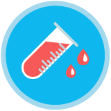
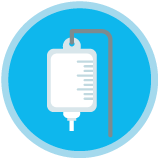

Enfermera general y/o Especialista (asignada al Código infarto)
Enfermera general y/o Especialista (asignada al Código infarto)
Identifica condiciones de alto riesgo del paciente y notifica inmediatamente al médico responsable.
Canaliza una vía venosa al paciente para pasar medicamentos.

Facilita la toma de muestras sanguíneas para triage cardiaco y/o estudios de laboratorio.

Coloca el suministro de oxígeno por puntas nasales a 3 litros por minuto y el suministro de los medicamentos que el médico le indique.
En caso de que el paciente haya sido sometido a TF:
Toma el ECG a los 60 y 90 minutos posteriores a ésta.
En caso de que el paciente sea sometido a ICPP:
Realiza la tricotomía y limpieza de región inguinal o radial, dependiendo del abordaje vascular que se emplee en el centro de reperfusión.